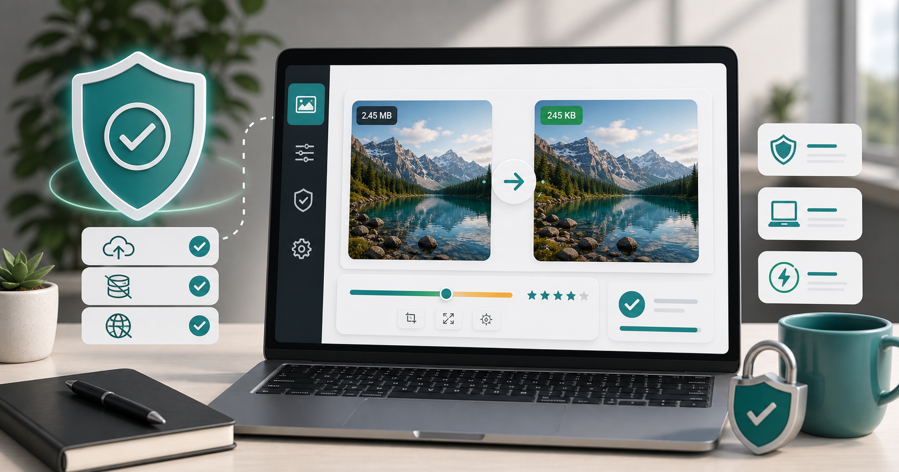

Privacy
Private image compressor with no upload.

Many image compressors work by uploading your file to a server, processing it, and sending the compressed version back. That can be fine for public images, but it feels uncomfortable for personal photos, ID documents, application images, business screenshots, or anything private. A browser-based compressor is different when it processes files locally.
Local processing means the compression happens in your browser whenever possible. You choose the image, adjust settings, and export the compressed copy without intentionally sending the image to a remote compression server. This is useful for job application photos, passport-style images, profile pictures, document scans, and private screenshots.
Privacy is not the only benefit. Local compression can also feel faster for everyday files because there is no upload wait for each image. The experience depends on your device and browser, but for normal images it is often quick enough. It also reduces backend costs for the tool, which helps keep it free.
You should still use common sense. Do not upload sensitive documents to random websites that do not explain how processing works. Read the privacy page, keep original files safe, and avoid sharing personal information unnecessarily. If a file is extremely sensitive, use trusted offline software or your organization's approved process.
CompressPixel is designed around this privacy-first workflow. Use the free private image compressor for everyday images that need resizing or file-size reduction. If the image is for a job application, read compress photo for job application. If it is a personal upload with a strict limit, read reduce image size in KB online.
A no-upload workflow is especially helpful for images that are not meant to be public. Examples include application photos, internal dashboards, receipts, medical appointment screenshots, personal documents, and client previews. Even when the image is not highly sensitive, it is reasonable to avoid unnecessary uploads.
Local browser tools also give you quick iteration. You can try one quality setting, check the file size, and adjust without waiting for a server round trip. For batches of normal images, that makes the workflow feel more direct. The main limitation is your device: very large images or huge batches may take longer on older phones or laptops.
Privacy pages matter too. Before using any tool with personal files, look for a clear explanation of how files are processed, whether analytics are used, and how advertising may work. A trustworthy tool should make this easy to find. CompressPixel includes privacy and cookie pages for that reason.
For sensitive professional workflows, follow your employer or client rules. Browser-based compression is convenient, but some organizations require approved software or storage systems. The safest tool is the one that fits both the technical task and the privacy requirement.
It also helps to understand the difference between processing and publishing. Compressing an image locally prepares a smaller copy, but uploading it to a job portal, social platform, or website is still a separate action. Share only the final file with the service that actually needs it, and avoid creating unnecessary copies elsewhere. That habit keeps the workflow tidy and more private.
The safest workflow is simple: keep your original image, compress locally when possible, download the optimized copy, and upload only the final file to the destination that actually needs it. That reduces unnecessary sharing and gives you more control over quality.
Sources and further reading
- web.dev image performance explains browser and web image optimization concepts.
- Google Image SEO best practices is useful for images that will later be published online.